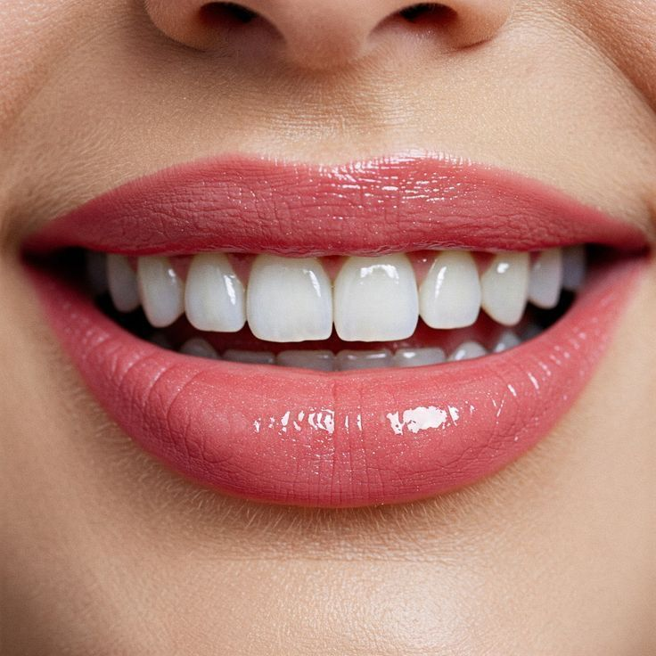
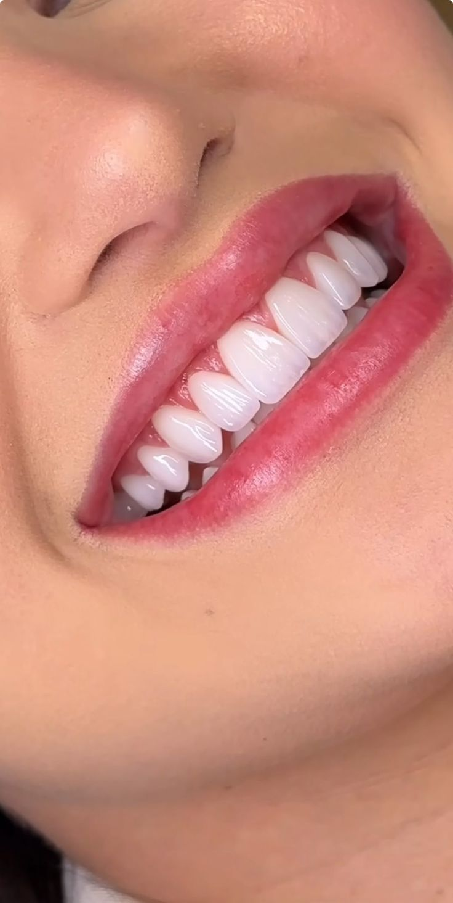
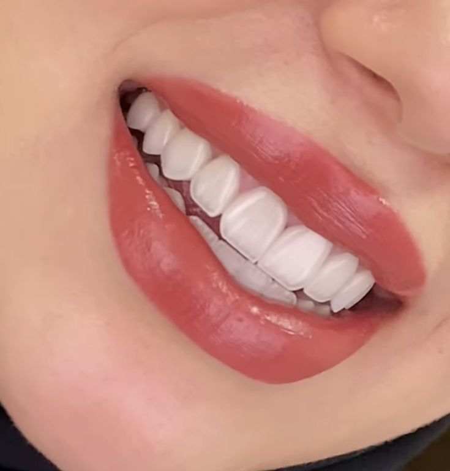
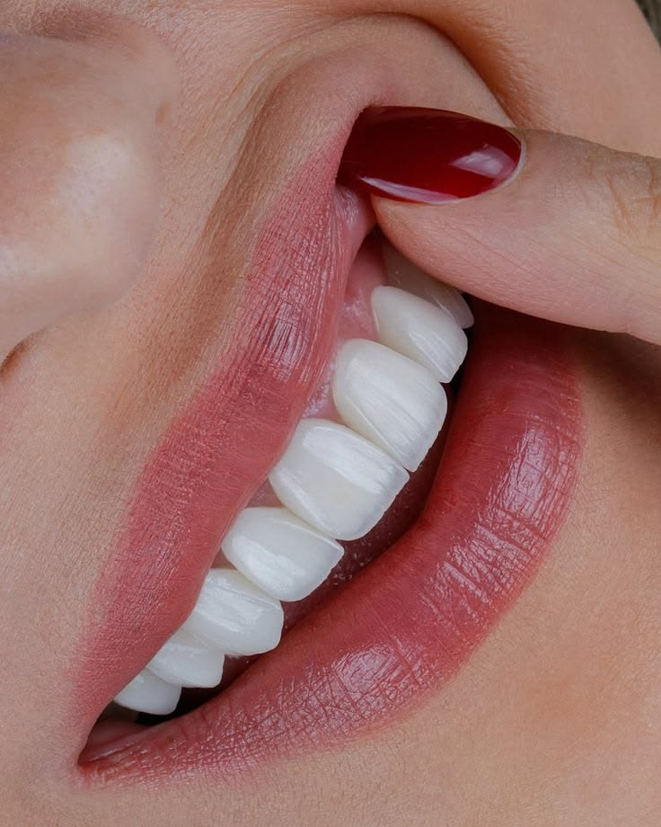
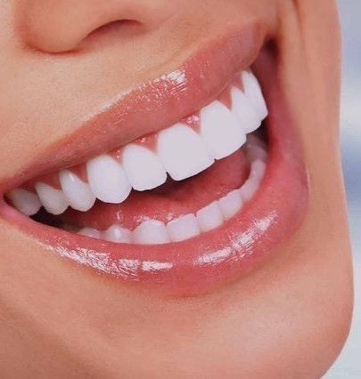
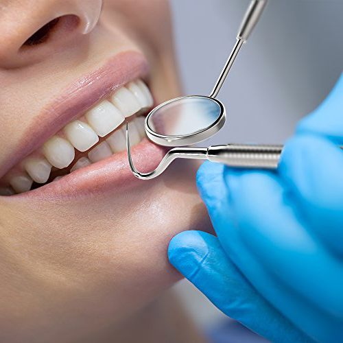
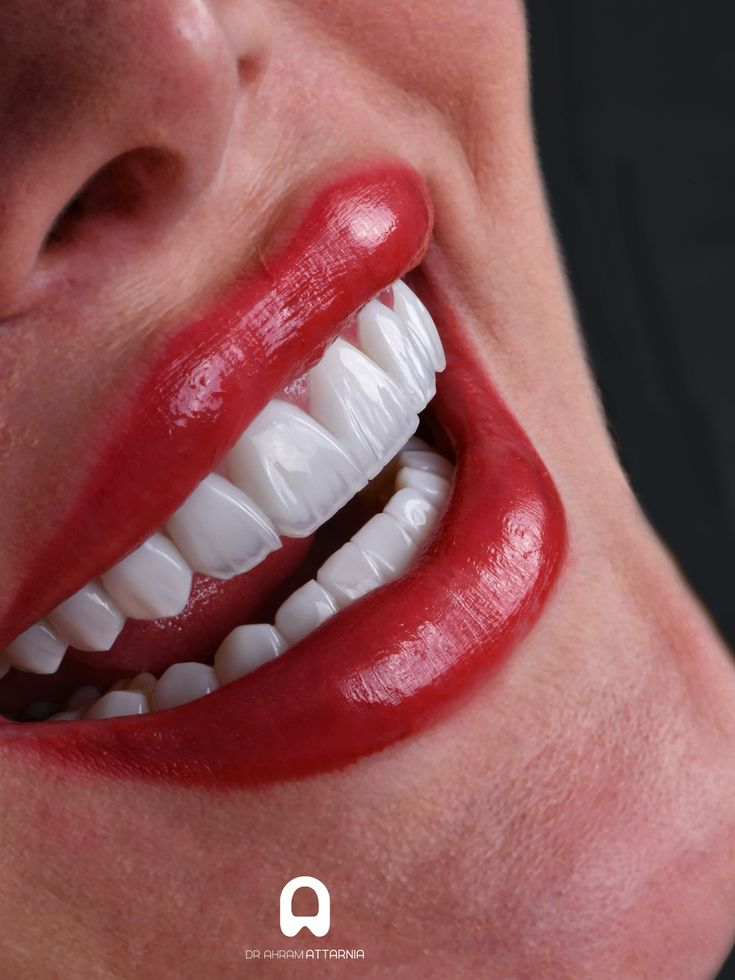

ابتسامة هوليوود
تصميم ابتسامة جمالي بمظهر ناعم وأنيق ينسجم مع ملامح الوجه.
نقدّم تجربة عصرية لطب وتجميل الأسنان تجمع بين الحجز السريع، والمتابعة المنظمة، والاستشارات الأولية الذكية، مع عرض واضح لخدمات تجميل الابتسامة، الفينير، التقويم، والزراعة.

يقدّم الموقع التعريفي للعيادة تجربة فاخرة وواضحة، مع إبراز الخدمات التجميلية والعلاجية بأسلوب منظم. يمكن لاحقًا استبدال النص الحالي باسم الطبيب الحقيقي، وشهاداته، وخبراته، وأيام العمل الرسمية.
نركز على شرح الخيارات للمراجع بلغة بسيطة، وعرض مسار العلاج، وتمكين الحجز بسهولة مع ربطه بلوحة إدارة المرضى والمواعيد.
✦ واجهة تسويقية واضحة وفخمة.
✦ إبراز صور الابتسامة بشكل جذاب.
✦ قسم ذكاء اصطناعي للمعلومات الأولية.
✦ نظام إداري للمواعيد والملفات والفواتير.
✦ ألوان بيضاء وخضراء مريحة وراقية.
تصميم ابتسامة جمالي بمظهر ناعم وأنيق ينسجم مع ملامح الوجه.
حل تجميلي لإخفاء التصبغات وتحسين شكل الأسنان الأمامية.
تنظيم اصطفاف الأسنان وتحسين الإطباق مع مظهر لطيف وعملي.
تعويض الأسنان المفقودة واستعادة الوظيفة والثقة بالمظهر.
نماذج عرض بصري لابتسامات ناصعة ومظهر جمالي راقٍ داخل الواجهة التسويقية. يمكن استبدالها لاحقًا بحالات الطبيب الفعلية بعد الموافقة على النشر.

مظهر أبيض طبيعي وتناسق ناعم للأسنان الأمامية.

نتيجة مشرقة ومرتبة تبرز تناسق الابتسامة.

لون موحد وحواف أنيقة لمظهر بسيط وفخم.

إبراز بياض الأسنان بلمسة تجميلية واضحة.

تفاصيل ناعمة وإشراقة مناسبة للتصوير التسويقي.

مظهر شديد البياض مناسب لقسم التجميل والعدسات.
أضفنا قسمًا منفصلًا للتقويم حتى يظهر تنوع الخدمات في الصفحة الرئيسية، وحتى لا يقتصر الموقع على التجميل فقط. يمكن استخدام هذا القسم للتعريف بالتقويم المعدني أو الشفاف أو متابعة نتائج الاصطفاف.
احجز فحص التقويم
صورة عرض توضيحية لقسم التقويم يمكن استبدالها بصور حالات حقيقية بإذن النشر.
الحجز واضح، والمساعد الذكي يجاوب أسئلة أولية بسرعة، والواجهة مريحة بصريًا.
الصور، الأقسام، والألوان تقدم انطباعًا احترافيًا وفخمًا عن مستوى العناية داخل العيادة.
لوحة الإدارة تتضمن فتح ملف مريض جديد، البحث، الخطط العلاجية، المحاسبة، وسجل المواعيد.
المساعد يجيب بأسلوب طبيعي بالعربية أو الإنجليزية عن الألم، الحساسية، نزيف اللثة، رائحة الفم، ضرس العقل، العناية بعد الجير أو العصب أو الزراعة، مع مراعاة عدم تقديم تشخيص نهائي.
عند ربط مفتاح OpenAI API سيعمل المساعد بوضع توليدي. وإذا لم يوجد المفتاح، يعمل تلقائيًا بوضع ذكي احتياطي بإجابات آمنة وسريعة.
اختاري اليوم والوقت المناسب. النظام يعرض فقط الأوقات غير المتعارضة مع مواعيد العيادة المسجلة في لوحة الإدارة.
طلب الحجز لا يصبح مؤكدًا إلا بعد مراجعة العيادة والتواصل مع المراجع.
في النسخة الحالية: من 4:00 مساءً حتى 10:00 مساءً. ويمكن تعديلها من السيرفر أو توسيعها لاحقًا حسب أيام العمل الرسمية.
الرياض، المملكة العربية السعودية
رابط موقع العيادة أو واتساب الاستقبال يُضاف لاحقًا